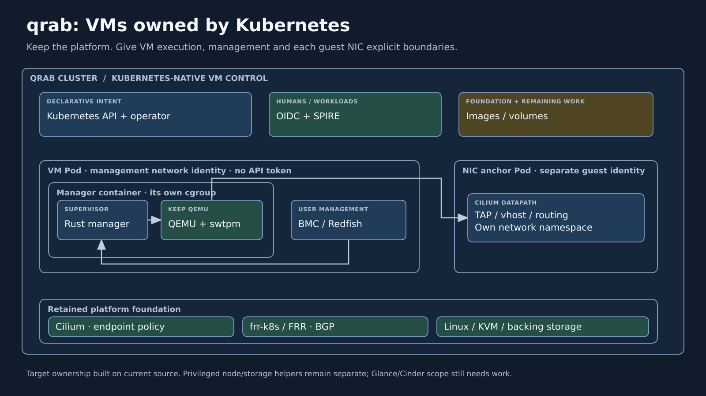
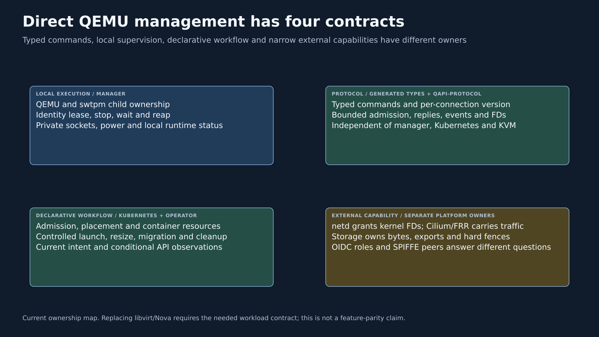
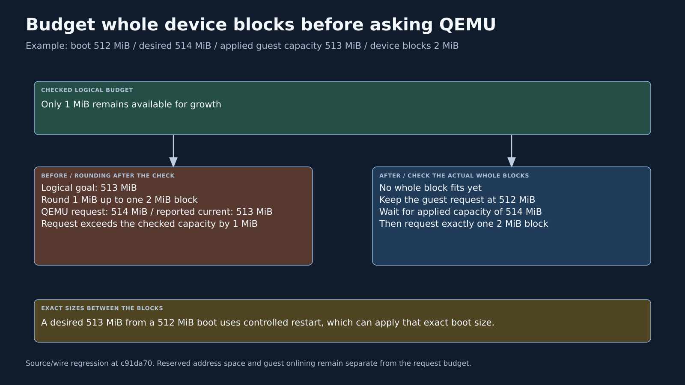
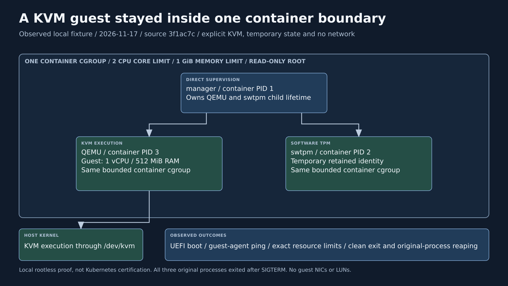
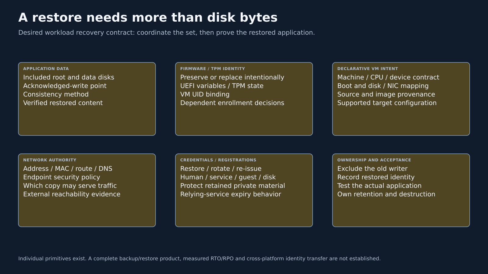

What replaces libvirt?
Four contracts behind direct QEMU management

OpenStack: simple boundary overview

qrab: simple target boundary overview

Direct QEMU management has four contracts
Wire correctness has explicit bounds
Correlate
Per-connection version, typed command flags and owned request IDs bind replies to requests.
Bound pressure
Eight in-band unanswered commands, separate negotiated OOB admission, bounded frames and event queues.
Keep ownership
Sent requests retain admission after caller cancellation; descriptors are owned through send or refusal.
A deadline is an observation, not rollback
Before dispatch
A local refusal establishes that this request was not sent.
Correlated reply
Decode the command result, then observe any wider lifecycle or guest work.
Unknown outcome
After dispatch, timeout or connection loss can leave execution unknown. The transport does not replay mutations.
Own the child through cleanup
Normal stop
Request guest powerdown, wait the configured grace, then quit or kill/wait when required.
Exceptional cleanup
Keep the identity-state lease until the actual QEMU child is reaped, even after async cancellation.
Separate hard fence
A local state lease and Pod deletion do not prove that a remote guest-disk writer is fenced.

Budget whole memory-device blocks before QMP

Observed local KVM/container boundary

A restore needs more than disk bytes
External capability owners remain
Kubernetes
Admission, placement, device assignment, container resources and Pod lifecycle.
Network
netd grants kernel resources; separate anchor identities use Cilium policy and FRR/BGP routing.
Storage and identity
Backend fences protect writers. OIDC roles and SPIFFE peers answer separate authority questions.
Accept the workload contract explicitly
Compatibility
CPU/machine/firmware, guest cooperation, device topology and migration cases.
Recovery
Unknown writers, process/namespace replacement, retained identity and backup/restore.
Evidence
Local peer and KVM fixtures, component integration and deployed workload acceptance prove different scopes.